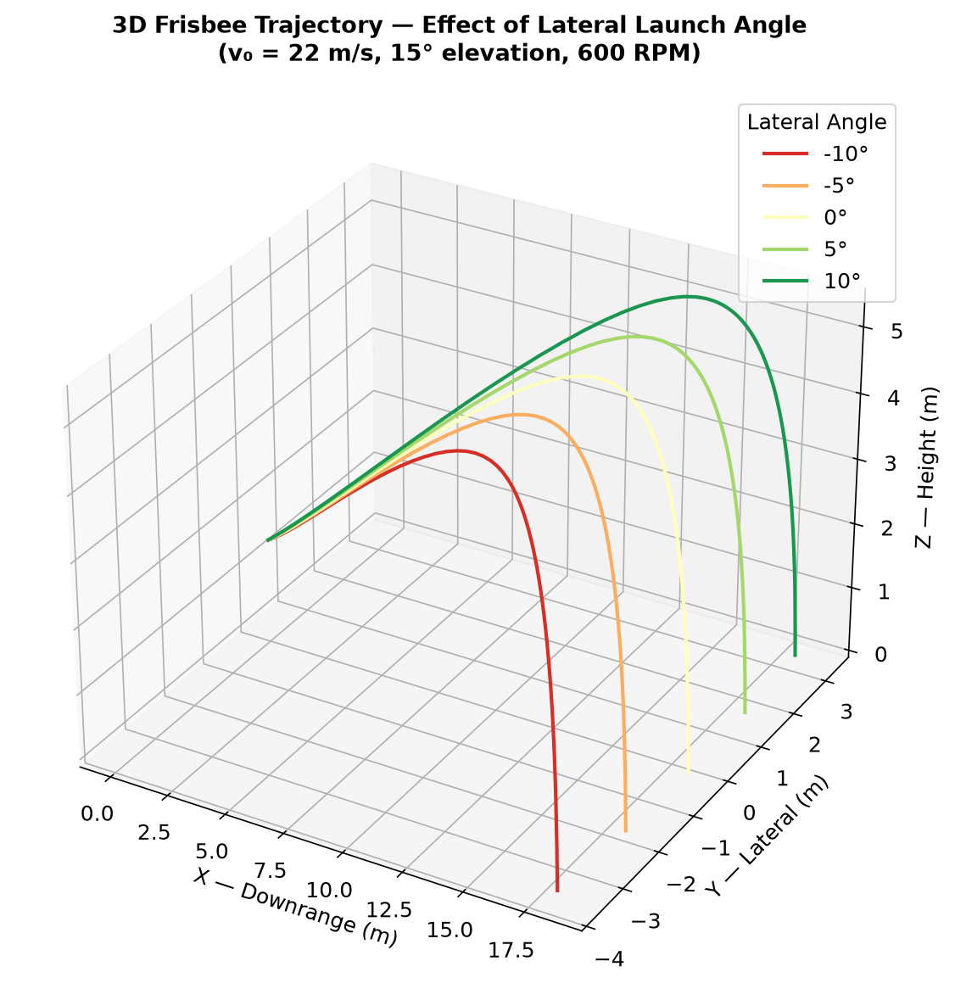
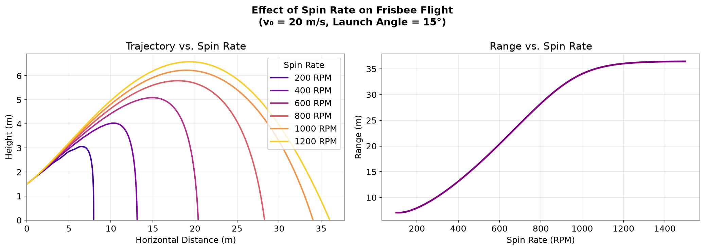
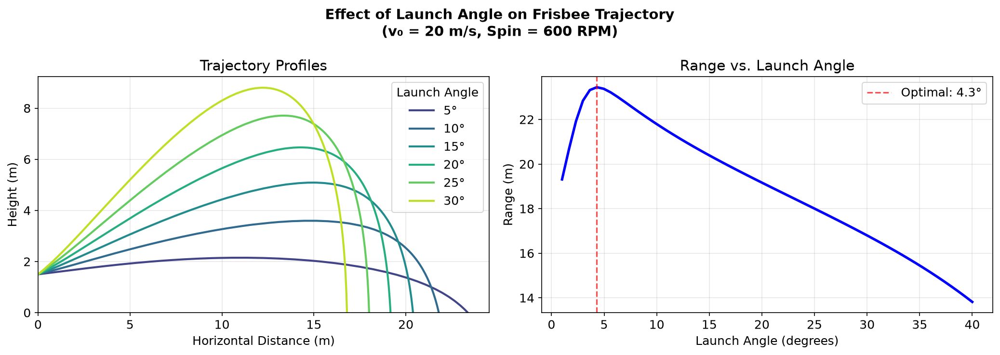

Why a frisbee flies furthest when thrown almost flat.
Work out why a disc flies furthest when it is thrown almost flat, for the Flight Dynamics course at FAU.
Lift and drag from ANSYS Fluent (k-ω SST, −10° to +30°), cross-checked in SolidWorks Flow Simulation. A 10-state 6-DOF model with gyroscopic spin coupling in MATLAB/Simulink (ode45) and Python.
Best launch angle is about 4 to 5 degrees, giving 23.4 m at 20 m/s and 600 RPM. A 40° throw only reaches about 14 m. Raising spin from 250 to 1000 RPM takes range from about 9 m to 34 m.


